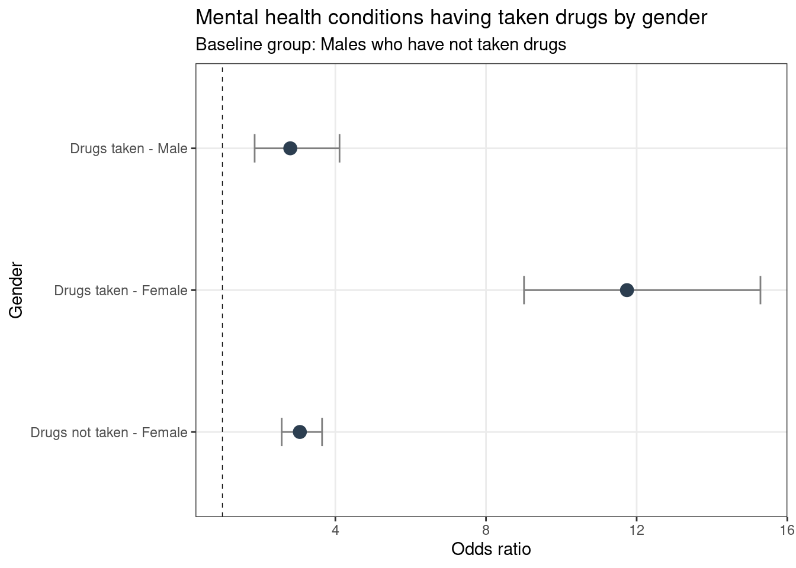
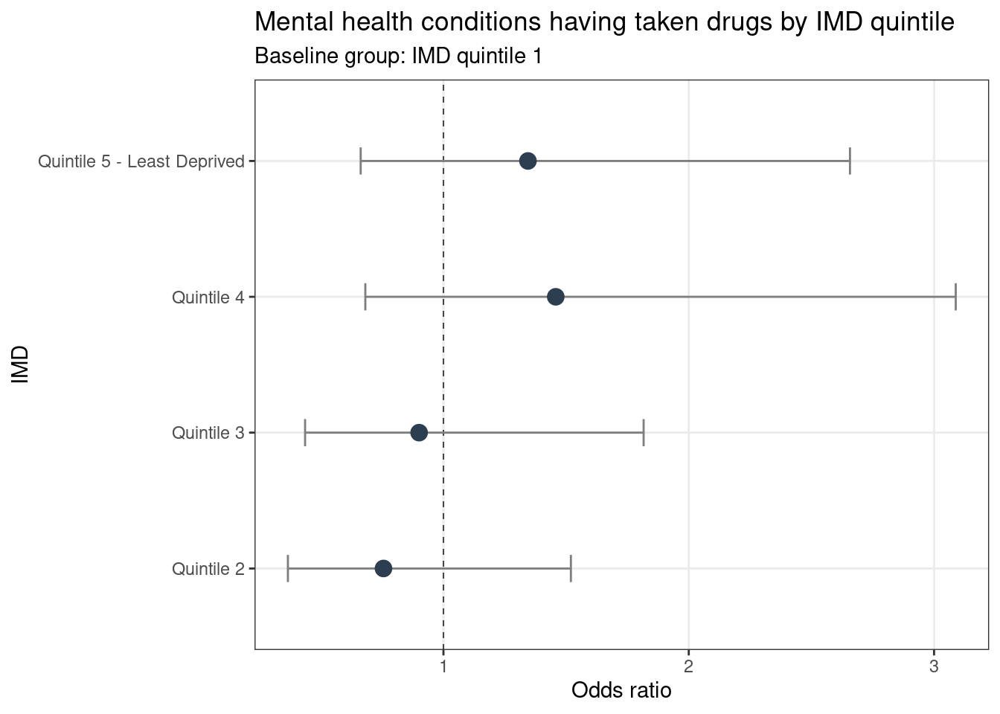
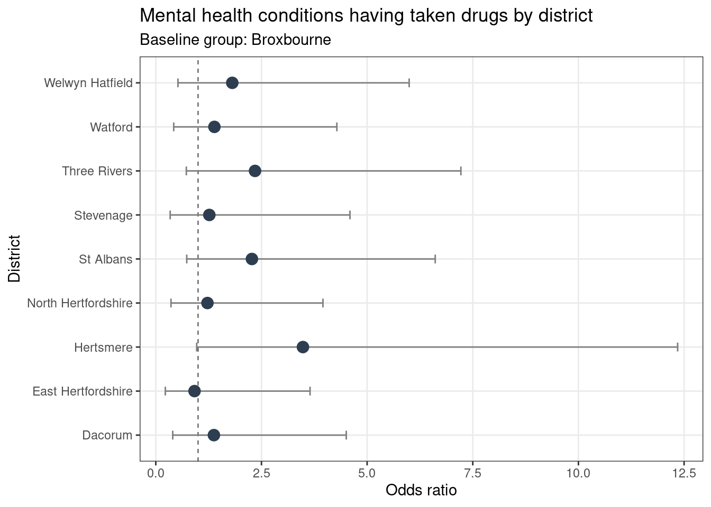

Abstract
Taking drugs have known effects on populations’ mental health. With increasing numbers of young people seeking mental health support, this blogpost looks at how the impact of drugs may exacerbate the issue.
To note, counts are rounded to the nearest five for disclosure purposes.
In the data collected for the latest YPHWS cohort, 765 students out of a total of 11,150 students claimed to have taken a drug at least once, representing 6.86% of the total respondents. 110 students claimed to take drugs regularly, representing 0.99% of respondents.
The table below highlights the types of drugs taken by students. To note, individuals may have claimed to have taken more than one type of drug:
| Drug | Number of individuals who claimed to have taken drug |
|---|---|
| Cannabis | 465 |
| Ketamine | 100 |
| Nitrous | 100 |
| Cocaine | 85 |
| Hallucinogen | 85 |
| Ecstasy | 75 |
| Solvents | 65 |
| Amphetamines | 60 |
| Crack | 60 |
| Poppers | 60 |
| Xanex | 60 |
| Heroin | 55 |
| Steroids | 55 |
| Khat | 50 |
| Mephedrone | 50 |
| Nps | 50 |
Focusing on mental health, 1,640 students claimed to have received a diagnosis through mental health support, representing 14.71 % of respondents.
Methods
To investigate links between drug use and issues related to mental health, logistic regression is used. This is a form of regression analysis where the response variable is binary (i.e. Yes/No). From the logistic regression, we can evaluate what predictors have an effect on the outcome of the response variable, whilst we can also compare the predictability between explanatory variables using an odds ratio.
In the following, we treat accessing mental health as the response variable, meaning only individuals who claim they categorically did or did not access mental health services are included in the analysis.
In the following report we assess how drugs relate to:
- Worrying about mental health;
- Skipping school due to mental health;
- Needing mental health services;
- Having mental health conditions.
The analysis does not confirm causation. Predictors can only be linked to response variables (particularly if they are significant). It cannot be said for certain whether the predictor causes the response.
In some of the examples below, there are graphical representations of the logistic regression analysis and odds ratio outputs. In these graphs, there is a baseline group in which other groups are compared against (baselines are clarified in the examples), from which groups can be claimed to be more or less likely to have a certain characteristic (e.g. to have a mental health condition). Each group has an associated confidence interval, in which we can be 95% certain the real value lies in. Groups can be determined to be significantly different from one another if the intervals do not overlap, or the baseline group does not fall within the groups interval.
A statistically significant relationship between the explanatory and response variables is outlined when the p-value is lower than the 0.05 threshold. In this case, the p-value is small enough to reject the null hypothesis of the conducted test, which is that there is no relationship between the variables.
Results
A total of 765 students in this analysis claimed to have taken drugs. After conducting a logistic regression analysis having controlled for sex and age, it was found that:
Students who claimed to have taken drugs are 1.39 times more likely to be worried about their mental health than students who did not take drugs. This association is significant (p-value < 0.05).;
Students who claimed to have taken drugs are 2.88 times more likely to skip school due to mental health reasons than students who did not take drugs. This association is significant (p-value < 0.05).;
Students who claimed to have taken drugs are 2.49 times more likely to access mental health services than students who did not take drugs. This association is significant (p-value < 0.05).;
Students who claimed to have taken drugs are 3.97 times more likely to have a mental health condition than students who did not take drugs. This association is significant (p-value < 0.05).;
Females who claimed to have taken drugs are significantly more likely to worry about their mental health, skip school due to mental health, access mental health services and have a mental health condition compared to males who claim to have taken drugs’
Year 10 students who claimed to have taken drugs are significantly more likely to access mental health services compared to year 9 students.
Is there an association between gender, drugs and mental health conditions?

Compared to the baseline of males who have not taken drugs, males who have taken drugs are 2.8 times more likely to have a mental health condition. Among those who have claimed to have taken drugs, females are 4.19 times more likely than males to have a mental health condition, a significant difference. Females who have taken drugs are 3.84 times more likely to have a mental health condition than males who have not taken drugs.
Is there an association between deprivation and mental health conditions?

For individuals who have claimed to have taken drugs, the likelihood of having a mental health condition is lowest for those residing in IMD quintile 2 (most deprived). However, the differences between each quintile are not significant.
Is there an association between district of residence and mental health conditions?

For individuals who have claimed to have taken drugs, the likelihood of having mental health condition is lowest for those residing in East Hertfordshire. However, the differences between each district are not significant.
Conclusions/implications
In this report, we highlight that there is a significant link between drug use and an individual’s mental health. Young people who take drugs are more likely to worry about their mental health. This is a cause for concern as drug use is often conducted in order to suppress mental health conditions, such as anxiety and depression. Young people who take drugs are also more likely to skip school due to mental health issues, which in turn will potentially affect their education in the short and long term. Students with zero absence are 10 times more likely to achieve the English Baccalaureate than those who miss 15%-20% of their school year. Despite these findings, it cannot be said for certain whether drug use causes issues that arise with mental health, it can only be claimed there is a link between the two variables.